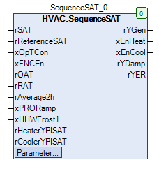

SequenceSUPTemp (FB)¶
FUNCTION_BLOCK SequenceSUPTemp
Kurzbeschreibung¶
Zulufttemperaturregelung für eine Lüftungsanlage mit Energierückgewinnung ( stetiges Umluftklappensystem und Energierückgewinnung ) inklusive der Freigaben für die aktive Beheizung und Kühlung.Typische Anwendung: Zulufttemperaturregelung in einer Lüftungsanlage
Darstellung¶

Funktionsbeschreibung¶
Allgemeines¶
Dieser Funktionsbaustein ermöglicht nach der Freigabe ( xOpTCon = TRUE ) die Regelung der Zulufttemperatur rSAT auf den Sollwert rReferenceSAT durch die Erzeugung der Stellsignale
rYDamp ( Umluftklappensystem 0.0 - 100.0 % Aussenluftanteil ) und rYER ( Energierückgewinnung 0.0 - 100.0 % ).
Nach der vollständigen Ausnutzung der Energierückgewinnungssysteme erfolgt bei Bedarf die Freigabe der aktiven Beheizung ( xEnHeat = TRUE ) oder aktiven Kühlung ( xEnCool = TRUE ).
Die Regelung der Zulufttemperatur bei aktiver Beheizung oder bei aktiver Kühlung muss jeweils über einen separaten, externen PI-Regler erfolgen. Die Stellsignale dieser externen PI-Regler
werden auf die Eingänge rHeaterYPISAT bzw. rCoolerYPISAT rückgeführt, um einen energieökonomische Regelung der Energierückgewinnung zu gewährleisten.
Durch die Berücksichtigung der aktuellen Aussentemperatur rOAT bzw. Ablufttemperatur rRAT kann für jeden Betriebsfall die optimale Energierückgewinnung vorgenommen werden.
Beim Einsatz dieses Bausteins ist die räumliche Anordnung der Komponenten ( Klappensystem, Energierückgewinnung, Erhitzerkreis, Kühlkreis, etc. ) zu berücksichtigen.
Fall 1 - Winterfall: Zulufttemperatur < Zuluftsolltemperatur, Aussentemperatur < Ablufttemperatur, Zuluftsolltemperatur > Ablufttemperatur
Fall 2 - Sommerfall: Zulufttemperatur > Zuluftsolltemperatur, Aussentemperatur > Ablufttemperatur, Zuluftsolltemperatur < Ablufttemperatur
Freigabe / Sperrung des Reglers xOpTCon¶
Im gesperrten Zustand ( xOpTCon = FALSE ) finden keine Regelungs- und Steuerungsprozesse statt, die Ausgänge werden auf folgende Signale / Zustände fixiert:
rYGen = 100.0 %
xEnHeat = FALSE
xEnCool = FALSE
rYDamp = 100.0 %
rYER = 100.0 %
Freigabe / Sperrung der freien Nachtkühlung xFNCEn¶
Dieser Eingang signalisiert ( xFNCEn = TRUE ) die aktive freie Nachtauskühlung und sperrt den Ausgang für die aktive Kühlung xEnCool unabhängig von den
übrigen Anforderungen.
Verzögerter Start der Regelung xPRORamp bzw. xHHWFrost1¶
Der interne Sequenzregler ( PI-Regler ) wird gesperrt, falls entweder der Eingang xPRORamp und / oder der Eingang xHHWFrost1 aktiv ( = TRUE ) ist.
Die Freigabe des internen Sequenzreglers erfolgt mit einer Zeitverzögerung von 5 Minuten, nachdem beide Eingänge wieder inaktiv ( = FALSE ) sind.
Rückmeldung der Stellsignale rHeaterYPISAT bzw. rCoolerYPISAT¶
Die Rückmeldung der Stellsignale für die aktive Beheizung rHeaterYPISAT und Kühlung rCoolerYPISAT wird intern überwacht und wie folgt ausgewertet:
Stellsignal rHeaterYPISAT > 8.0 %: Deaktivierung des internen Sequenzreglers
Stellsignal rHeaterYPISAT < 3.0 %: Aktivierung des internen Sequenzreglers nach einer Zeitverzögerung von 500 ms
Stellsignal rCoolYPISAT > 8.0 %: Deaktivierung des internen Sequenzreglers
Stellsignal rCoolYPISAT < 3.0 %: Aktivierung des internen Sequenzreglers nach einer Zeitverzögerung von 500 ms
Allgemeines Stellsignal aus der Squenzregelung rYGen¶
Dieses Stellsignal im Bereich 0.0 - 100.0 % ( 0.0% = maximale Energierückgewinnung, 100.0 = keine Energierückgewinnung ) wird primär durch den internen Sequenzregler erzeugt und durch
die Eingangsgrößen rSAT ( Zulufttemperatur ), rReferenceSAT ( Zuluftsolltemperatur ), rOAT ( Aussenlufttemperatur ) und rRAT ( Ablufttemperatur ) beeinflusst.
Freigabe / Sperrung der aktiven Beheizung xEnHeat¶
Die Freigabe der aktiven Beheizung ist aktiv ( = TRUE ), falls folgende Bedingungen gleichzeitig erfüllt sind:
xOptCon = TRUE
( Aussentemperatur > Ablufttemperatur UND rYGen > 99% ) ODER ( Aussentemperatur < Ablufttemperatur UND rYGen < 1% )
In allen übrigen Situation ist die aktive Beheizung gesperrt ( = FALSE ).
Freigabe / Sperrung der aktiven Kühlung xEnCool¶
Die Freigabe der aktiven Kühlung ist aktiv ( = TRUE ), falls folgende Bedingungen gleichzeitig erfüllt sind:
xOptCon = TRUE
( Aussentemperatur > Ablufttemperatur UND rYGen < 1% ) ODER ( Aussentemperatur < Ablufttemperatur UND rYGen > 99% )
xFNCEn = FALSE
rAverage2h > rSetpoint_CoolOAT ( Sperrung der aktiven Kühlung bei tiefen Aussentemperaturen )
In allen übrigen Situation ist die aktive Kühlung gesperrt ( = FALSE ).
Stellsignal für das Klappensystem rYDamp¶
Das Stellsignal für das Klappensystem ( 0.0 - 100.0 %, 0.0 % = keine Aussenluftanteil, 100.0 % maximaler Aussenluftanteil ) wird in Abhängigkeit
vom allgemeines Stellsignal aus der Squenzregelung rYGen wie folgt erzeugt:
Das Stellsignal rYGen wird im Bereich r1Damp bis r2Damp linear in ein Signal im Bereich von 0.0 - 100.0 umgesetzt und begrenzt.
Stellsignal für das System zur Energierückgewinnung rYER¶
Das Stellsignal für die Energierückgewinnung ( 0.0 - 100.0 %, 0.0 % = keine Energierückgewinnung, 100.0 % maximale Energierückgewinnung ) wird in Abhängigkeit
vom allgemeines Stellsignal aus der Squenzregelung rYGen wie folgt erzeugt:
Das Stellsignal rYGen wird im Bereich r1Er bis r2Er linear in ein Signal im Bereich von 100.0 - 0.0 umgesetzt und begrenzt.
Visualisierung¶
Codesys¶
- InOut:
Scope Name Type Initial Comment Input rSAT REAL Zulufttemperatur in °C rReferenceSAT REAL Zuluftsolltemperatur in °C xOpTCon BOOL Freigabe / Sperrung des Reglers ( FALSE = Sperrung, TRUE = Freigabe ) xFNCEn BOOL FALSE Freigabe / Sperrung der freien Nachtkühlung ( FALSE = Sperrung, TRUE = Freigabe ) rOAT REAL Aussenlufttemperatur in °C rRAT REAL Ablufttemperatur in °C rAverage2h REAL Aussentemperaturdurchschnitt über 2 Stunden in °C xPRORamp BOOL FALSE Anzeige - Stellsignalrampe nach dem Anfahrbetrieb ( FALSE = Aus, TRUE = Ein ) xHHWFrost1 BOOL FALSE Anzeige - Zustand - Frostschutz - Stufe 1 ( FALSE = Aus, TRUE = Ein ) rHeaterYPISAT REAL 0.0 Stellsignal vom Zulufttemperaturregler für die aktive Beheizung in % rCoolerYPISAT REAL 0.0 Stellsignal vom Zulufttemperaturregler für die aktive Kühlung in % Output rYGen REAL Allgemeines Stellsignal aus der Squenzregelung in % ( 0 - 100.0 % ) xEnHeat BOOL Freigabe / Sperrung der aktiven Beheizung ( FALSE = Sperrung, TRUE = Freigabe ) xEnCool BOOL Freigabe / Sperrung des aktiven Kühlung ( FALSE = Sperrung, TRUE = Freigabe ) rYDamp REAL Stellsignal für das Klappensystem in % ( 0 - 100.0 % ) rYER REAL Stellsignal für das System zur Energierückgewinnung in % ( 0 - 100.0 % ) Input rSetpoint_CoolOAT REAL 14.0 Schwellwert für die Freigabe der aktiven Kühlung ( Aussentemperaturdurchschnitt über 2 Stunden ) in °C r2ER REAL 100.0 Parameter x2 für die Sequenz - Energierückgewinnung in % ( y2 = 0.0 % ) r1ER REAL 30.0 Parameter x1 für die Sequenz - Energierückgewinnung in % ( y2 = 100.0 % ) r2Damp REAL 30.0 Parameter x2 für die Sequenz - Klappensystem in % ( y2 = 100.0 % ) r1Damp REAL 0.0 Parameter x1 für die Sequenz - Klappensystem in % ( y2 = 0.0 % ) rTn REAL 200.0 Nachstellzeit - Sequenzregler in Sekunden rKp REAL 3.5 Verstärkungsfaktor - Sequenzregler